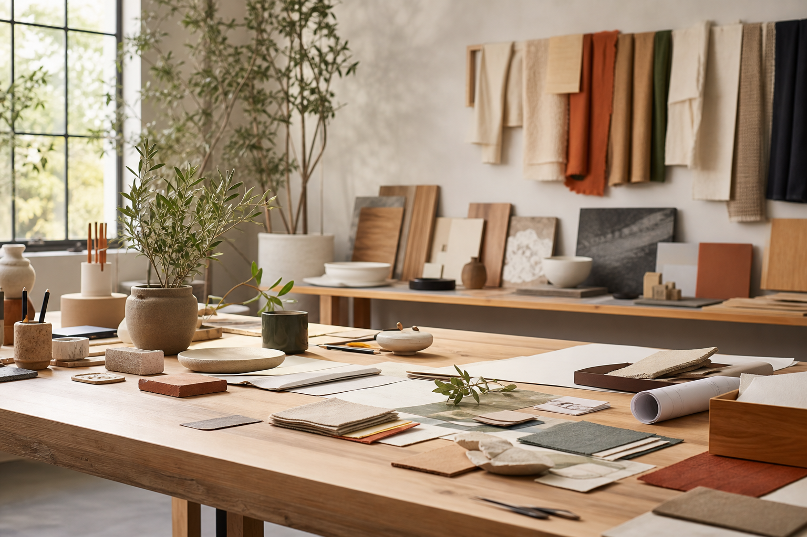

CTA 22 · Conversion block
Stacked Actions Landscape CTA
A spacious one-column CTA that leads into two destinations and a wide editorial photograph.
Create a foundation every team can understand and extend
Connect accessible components, responsive layouts, and explicit behavior so product work stays clear as it grows.
